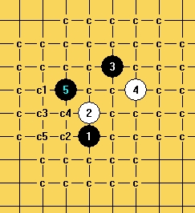
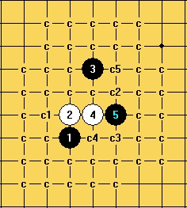
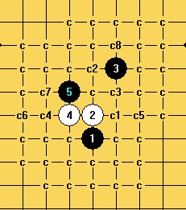
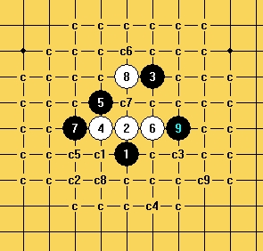
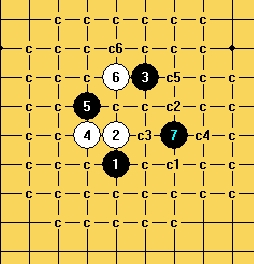

大溪月二打必胜地毯已完成！
#1 <font color="red">大溪月二打必胜地毯已完成！</font> 作者：逆刃 发表时间：2010-8-20 13:36:13
正如2008年8月公布大溪月最强4一打--黑木崖地毯时的预言一样，大溪月2打是黑必胜的，现已完成地毯，二打必胜的5也是当初预言的那个5。这里特别要感谢我的老弟砍家族，大溪月地毯大部分都是他扫的谱，我们花了不少精力和时间，鉴于有他人的劳动结果，不便于轻易共享，望各位棋友谅解！同时也感谢其他热心棋友的帮助，如歌剧院的幽灵，蓝色羚羊等等，谢谢你们。我以前共享过大水月白必胜地毯，大残月棋谱，黑木崖地毯以及明星二打地毯，虽不能说能为五子棋做什么贡献，但是至少是有很多朋友很希望得到这样的地毯，也算是无私奉献吧，今后可能就不会再拆棋了，要拆也就是拆着玩玩了，而不再是为了做必胜地毯去拆，不再是为了终结某个开局去拆，不过我相信接下来仍会有很多开局的地毯会陆续公布，如斜月一打等。每一个走在地毯道路上的五子棋朋友都是可敬的！
我记得当时完成大溪月一打的时候说大溪月是第一个一打必胜的妖刀，有人提出了质疑，后来想想确实如此，山外有山，人外有人，你怎么知道别人就没能做到其它的妖刀一打必胜呢？所以，我只能说据我所知，大溪月是目前第一个二打必胜的妖刀。
=======上图对应的爱五子棋谱代码如下，以便你拆解：========
h8h9i11g9g10
======================================================
暂时没有想要公布地毯，这里我先发一些最强分支的路线图出来。
大溪月强4之一：

=======上图对应的爱五子棋谱代码如下，以便你拆解：========
h8h9i11j10g10f10i9
======================================================
上面这个4的两打也是花了不少功夫才找到必胜点，比较猥琐。
=======上图对应的爱五子棋谱代码如下，以便你拆解：========
h8h9i11j10g10f10i9g11j8
======================================================
最强8的必胜。
大溪月强4之二：

其中c1点通黑木崖一打。下面是这个4其余最强的4个6的必胜，这个4并不是很难。
=======上图对应的爱五子棋谱代码如下，以便你拆解：========
h8h9i11i9j9j8g9
======================================================
=======上图对应的爱五子棋谱代码如下，以便你拆解：========
h8h9i11i9j9j10i8
======================================================
=======上图对应的爱五子棋谱代码如下，以便你拆解：========
h8h9i11i9j9i8g10
======================================================
=======上图对应的爱五子棋谱代码如下，以便你拆解：========
h8h9i11i9j9j11g8
======================================================
下面说说最强4的两打5：

如我预言的一样，这个5是可以必胜的，不过地毯起来却是相当费力，很繁琐，很猥琐。

强6之一：
先说最强点。如图，活三的6是最强的，7手挡左边，8手最强后，黑棋9手猥琐必胜。上面标注的是几个强10，这里不做一一详述。

强6之二：
这个是次强6，黑棋7手必胜，但是也是非常复杂！ 下面是几个强8的路线。
=======上图对应的爱五子棋谱代码如下，以便你拆解：========
h8h9i11g9g10h11j9j8k10
======================================================
=======上图对应的爱五子棋谱代码如下，以便你拆解：========
h8h9i11g9g10h11j9j10k8
=======================================
#2 Re:大溪月二打必胜地毯已完成！ 作者：夜阑人静 发表时间：2010-8-20 13:50:53
为了感谢逆刀一直的无私奉献，特浮上水面，进行我的第一次处女回帖。。。
［ 有志青年 于 2010-8-20 14:07:33 时奖励此帖[金币加 20 威望加1］
［ 蓝色羚羊 于 2010-8-20 15:38:46 时花20金币送鲜花一朵］
［ 鬼冢弹间 于 2010-8-21 2:13:28 时花20金币送鲜花一朵］
#3 Re:大溪月二打必胜地毯已完成！ 作者：日月丽天 发表时间：2010-8-20 13:53:54
 逆刃老师辛苦了
逆刃老师辛苦了
#4 Re:大溪月二打必胜地毯已完成！ 作者：冥王哈迪斯 发表时间：2010-8-20 13:55:25
感谢逆刃大师对妖刀的贡献，，致敬，，，
#5 Re:大溪月二打必胜地毯已完成！ 作者：极地剑客 发表时间：2010-8-20 14:48:02
大师又地毯了一个了啊~NB~#6 Re:大溪月二打必胜地毯已完成！ 作者：蓝色羚羊 发表时间：2010-8-20 15:01:23
 感觉逆刃大哥想要退隐江湖似的，让人好伤感啊
感觉逆刃大哥想要退隐江湖似的，让人好伤感啊
#7 Re:大溪月二打必胜地毯已完成！ 作者：茗弈梓轩 发表时间：2010-8-20 15:31:17
深深地感谢逆刃大师对五子棋做出的贡献。
#8 Re:大溪月二打必胜地毯已完成！ 作者：砍 发表时间：2010-8-20 17:03:12
鹅鹅鹅鹅鹅鹅鹅鹅鹅鹅鹅鹅鹅鹅鹅鹅鹅鹅鹅鹅鹅，老哥 退隐江湖？额，真是和我的诀别之作啊老哥
退隐江湖？额，真是和我的诀别之作啊老哥
#9 Re:大溪月二打必胜地毯已完成！ 作者：龙小小 发表时间：2010-8-20 17:07:22
逆刃
#10 Re:大溪月二打必胜地毯已完成！ 作者：业余九级菜手 发表时间：2010-8-20 21:46:03
这个我有！
#11 Re:大溪月二打必胜地毯已完成！ 作者：侯军学棋 发表时间：2010-8-20 23:31:04
强大
#12 Re:大溪月二打必胜地毯已完成！ 作者：恺恺 发表时间：2010-8-21 8:43:39
 激动啊
激动啊
#13 Re:大溪月二打必胜地毯已完成！ 作者：墨竹 发表时间：2010-8-21 12:19:12
大师辛苦！！
#14 Re:大溪月二打必胜地毯已完成！ 作者：怪 发表时间：2010-8-22 14:30:35
 强，国庆放出来看看如何？
强，国庆放出来看看如何？
#15 Re:大溪月二打必胜地毯已完成！ 作者：安娜制作所 发表时间：2010-8-24 12:09:04
八月十五,团圆日共享一下哈!#16 Re:大溪月二打必胜地毯已完成！ 作者：白衣神童小剑魔 发表时间：2010-9-2 17:23:11
［ 掌棋宣传员 于 2010-9-2 23:43:47 时花20金币送鲜花一朵］
［ 掌棋宣传员 于 2010-9-2 23:43:48 时花20金币送鲜花一朵］
#17 Re:大溪月二打必胜地毯已完成！ 作者：越狱行辕 发表时间：2010-9-3 8:41:09
只能说 NB
#18 Re:大溪月二打必胜地毯已完成！ 作者：爱好者友 发表时间：2010-9-4 15:26:18
#19 Re:大溪月二打必胜地毯已完成！ 作者：水木泡泡 发表时间：2010-9-6 8:17:33
呵呵 逆刃 还是那么强 07年这个1打已经终结了 不过2打对当时来说还很遥远 不过不知道过了这么久 五子棋的地毯 是不是已经 没有当初的意义了。。。。现在居然看到一个一个地毯 说不出的感觉居然不是兴奋。。 还是愿各位的五子之路 开心。［ lfzxdh 于 2010-9-10 19:57:36 时花20金币送鲜花一朵］
#20 Re:大溪月二打必胜地毯已完成！ 作者：侯军学棋 发表时间：2010-9-11 13:46:13
饼子 饼子饼子#21 Re:大溪月二打必胜地毯已完成！ 作者：茗弈总监 发表时间：2010-9-27 13:03:22
呵呵,提供这么多参考,只要有时间,一定可以做出来的! 不过有人做了,我也懒得做了!#22 Re:大溪月二打必胜地毯已完成！ 作者：使者 发表时间：2010-10-1 15:26:20
请问逆刃老师，昨天我在看赌徒与刀魂对战的时候听赌徒说残月刀的两个强4都地毯了，不知是否有此事
#23 Re:大溪月二打必胜地毯已完成！ 作者：冷酒一杯 发表时间：2010-10-1 18:56:00
不是说国庆节放出来祝贺祖国生日吗？
#24 Re:大溪月二打必胜地毯已完成！ 作者：逆刃 发表时间：2010-10-1 23:41:19
22楼的朋友，我后来也没怎么研究大残月剩下的两个4了，不过感觉地毯起来还是很麻烦的。别人地毯没有我不清楚，我还没有，有的话会发出来。#25 Re:大溪月二打必胜地毯已完成！ 作者：使者 发表时间：2010-10-4 19:49:32
谢谢逆刀大哥
#26 Re:大溪月二打必胜地毯已完成！ 作者：死劲哭 发表时间：2010-12-24 10:11:10
我很想学，可是我什么都不懂#27 Re:大溪月二打必胜地毯已完成！ 作者：月光公主 发表时间：2011-3-20 12:24:51
 太强了
太强了
#28 Re:大溪月二打必胜地毯已完成！ 作者：茗弈蓝莲花 发表时间：2011-3-20 14:10:24
逆刃老师是五子棋地毯必胜路上的一个奇迹
#29 Re:大溪月二打必胜地毯已完成！ 作者：十三刀 发表时间：2011-7-5 20:00:24
谢谢逆刃老师，无私的奉献，
#30 Re:大溪月二打必胜地毯已完成！ 作者：光与色彩 发表时间：2011-7-5 21:25:08
能人处处有，敬佩！#31 Re:大溪月二打必胜地毯已完成！ 作者：棋元道 发表时间：2011-10-16 22:32:38
我想要啊，业余九级菜手
你怎么有？
#32 Re:大溪月二打必胜地毯已完成！ 作者：棋元道 发表时间：2011-10-16 22:56:56
还有怎么发棋谱？
#33 Re:大溪月二打必胜地毯已完成！ 作者：逆刃 发表时间：2011-10-16 23:02:28
感谢顶贴，这个谱可能是在贵宾区里面，需要20威望才能进去。
发棋谱：
如果是单独一张谱可以通过回帖框里最右上的按钮直接发；
如果是地毯谱可以压缩后上传至本站，有威望限制。
#34 Re:大溪月二打必胜地毯已完成！ 作者：棋元道 发表时间：2011-10-17 17:32:51
#35 Re:大溪月二打必胜地毯已完成！ 作者：棋元道 发表时间：2011-10-17 17:33:37
还是不懂啊，晕
#36 Re:大溪月二打必胜地毯已完成！ 作者：逆刃 发表时间：2011-10-17 21:44:31
时间过得好快啊，转眼又过去一年多了！
#37 Re:Re:大溪月二打必胜地毯已完成！ 作者：业余九级菜手 发表时间：2011-10-17 21:50:06
引用：
原文由 棋元道 发表于 2011-10-16 22:32:38 :我想要啊，业余九级菜手
你怎么有？就是逆刃老师发了变化后，我把二打没必的点补充上了就有了。感谢逆刃老师。
［此帖子已被 业余九级菜手 在 2011-10-17 21:51:04 编辑过］
#38 Re:大溪月二打必胜地毯已完成！ 作者：棋元道 发表时间：2011-10-18 0:16:37
求毛巾谱最好到20手#39 Re:大溪月二打必胜地毯已完成！ 作者：棋元道 发表时间：2011-10-23 21:31:12
很复杂啊，我弱防都搞不定，业余九级菜手发给我看看［ 失落刀 于 2011-10-23 22:17:54 时花20金币送鲜花一朵］
#40 Re:大溪月二打必胜地毯已完成！ 作者：棋元道 发表时间：2011-11-26 0:04:04
我终于
把二打没必的点补充上了，逆刀老师有个变化没有地毯完，是白棋最后不断攻的，威望值不够发不了图
#41 Re:大溪月二打必胜地毯已完成！ 作者：吹哥 发表时间：2011-12-17 16:38:17
深深地感谢逆刃大师对五子棋做出的贡献。